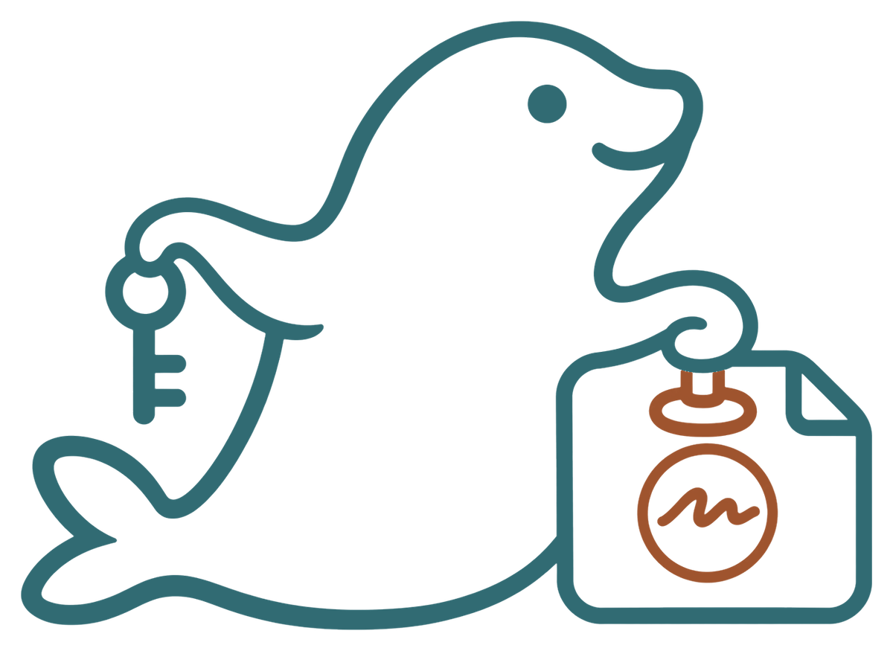
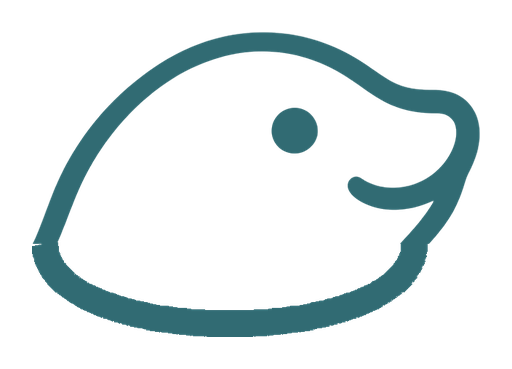
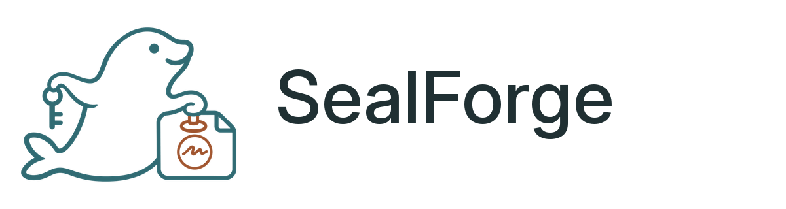

A / Held key
Keep the maker’s stamp. Fix the grip.


A clear flipper-to-ring contact, with the key hanging outside the body. The other flipper still operates the small stamp.

32 px
16 px
The actual face from the main drawing; only the neck is closed. No key, paper, stamp or different character in the icon.

Trade-off: Clearer workshop action; one more object to read.